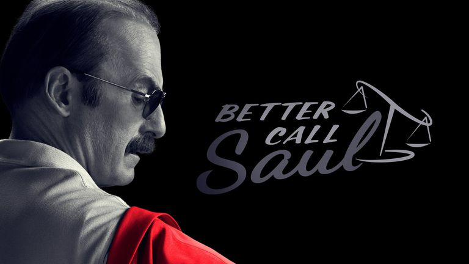
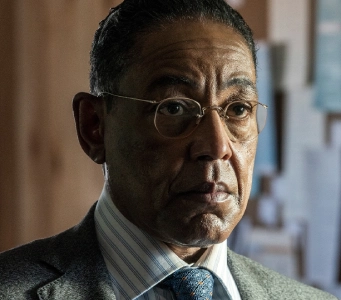

Better Call Saul es una serie que narra la transformación de Jimmy McGill, un abogado de poca monta, en Saul Goodman, el abogado penalista que conocimos en Breaking Bad. La serie explora sus desafíos legales, dilemas morales y relaciones personales en el contexto del mundo del crimen en Albuquerque.
A medida que avanza la serie, vemos cómo Jimmy se enfrenta a casos cada vez más complejos, interactúa con personajes del bajo mundo y lucha por mantener su integridad en un sistema corrupto. Su relación con Kim Wexler, una abogada talentosa, es un pilar fundamental de la serie, mostrando las complejidades y desafíos de sus vidas personales y profesionales.
El protagonista, un abogado con métodos poco ortodoxos que lucha por encontrar su lugar en el mundo legal.
Una abogada ambiciosa y talentosa, y el interés amoroso de Jimmy. Su relación es compleja y evoluciona a lo largo de la serie.
Un ex policía que trabaja como investigador privado y guardaespaldas. Su historia se entrelaza con la de Jimmy y el mundo del crimen.
El hermano mayor de Jimmy, un abogado exitoso que sufre de una enfermedad psicosomática. Su relación con Jimmy es tensa y conflictiva.
Socio en el bufete de abogados donde trabaja Chuck. Tiene una relación complicada con Jimmy y Kim.
Un miembro inteligente y ambicioso del cartel de Salamanca que se encuentra atrapado entre los mundos criminal y legítimo.
Un carismático y psicópata miembro de alto rango del cartel de Salamanca que se convierte en un adversario formidable para Jimmy y Kim.
Un empresario calculador y despiadado que dirige una exitosa cadena de restaurantes de pollo frito como fachada para su vasto imperio de drogas.
